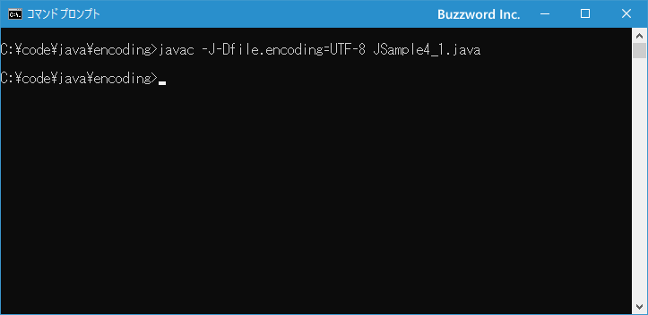
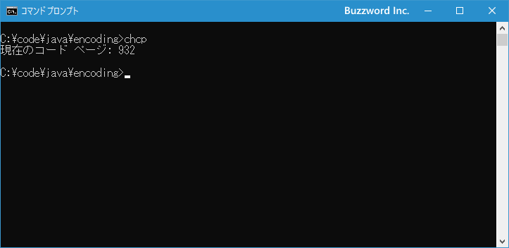
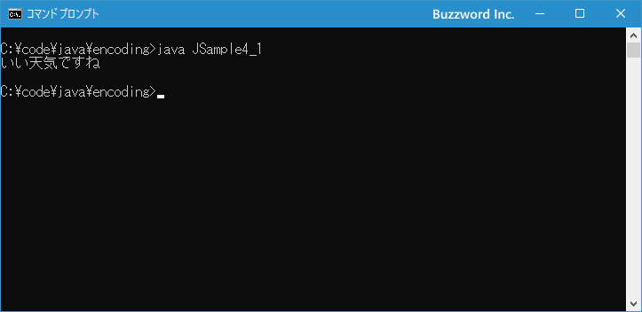
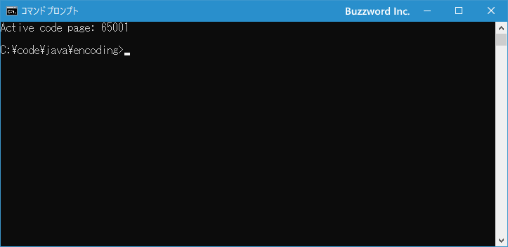
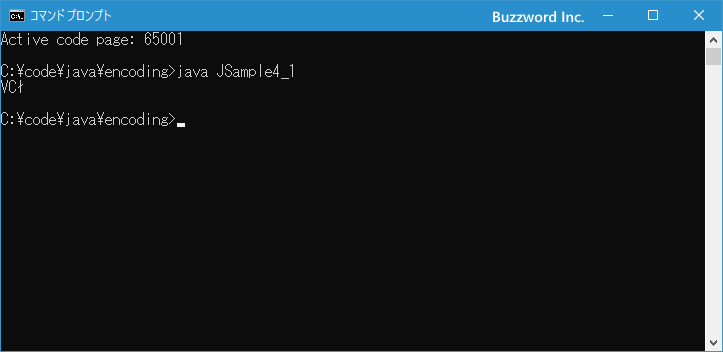

実行環境のエンコーディングに合わせてプログラムを実行する
Java のプログラムを実行した場合に、例えば画面に対して出力などを行う場合はデフォルトエンコーディングが使用されて出力が行われます。もし出力先のエンコーディングがデフォルトエンコーディングとは異なる場合には、プログラムを実行する時に使用するエンコーディングを指定する必要があります。ここでは Java のプログラムを実行する時に実行環境のエンコーディングに合わせて実行する方法について解説します。
使用するエンコーディングを指定してプログラムを実行する
Java では環境ごとにデフォルトのエンコーディングが file.encoding プロパティに設定されており、プログラムから出力を行う場合にもデフォルトエンコーディングを使って出力が行われます。その為、出力先の環境がデフォルトエンコーディングとは異なるエンコーディングが使用されている場合には使用するエンコーディングを指定する必要があります。
Java のプログラムを実行する時にエンコーディングを指定するには java の -D<name>=<value> オプションを使って file.encoding プロパティに別のエンコーディングを設定します。
java -Dfile.encoding=エンコーディング名 クラスファイル名
エンコーディング名にはプログラムを実行している環境で使用しているエンコーディングをを指定してください。(指定可能なエンコーディングについては「ソースファイルのエンコーディングを指定してコンパイルする」を参照されてください)。
実行環境が使用しているエンコーディングとして UTF-8 を使用した場合には次のようにエンコーディングを設定してプログラムを実行します。
java -Dfile.encoding=UTF-8 クラスファイル名
それでは実際に試してみます。テキストエディタで次のプログラムを記述し、 JSample4_1.java として保存してください。ソースファイルの文字コードは UTF-8 で保存しました。
class JSample4_1{
public static void main(String[] args){
System.out.println("いい天気ですね");
}
}
コマンドプロンプトを起動し、作成したソースファイルをコンパイルを行います。
javac -J-Dfile.encoding=UTF-8 JSample4_1.java

コマンドプロンプトのデフォルトのエンコーディングは MS932 となっています。確認するにはコマンドプロンプトで次のようにコマンドを実行してください。
chcp

※ コマンドプロンプトでエンコーディングを確認したり別のエンコーディングに設定する方法については「文字コードの設定(CHCP)」を参照されてください。
Java の Windows 環境でのデフォルトエンコーディングは MS932 で、プログラムを実行しているコマンドプロンプトのエンコーディングも MS932 のため、通常は特に何も指定しなくてもプログラムは問題なく動作します。実際にこの状態で次のようにプログラムを実行すると正常に実行されます。
java JSample4_1

それでは例としてコマンドプロンプトで使用しているエンコーディングを UTF-8 に変更してみます。コマンドプロンプトから次のように実行してください。
chcp 65001

コマンドプロンプトで使用しているエンコーディングが UTF-8 に変更になりました。
この状態で先ほどのプログラムを実行すると、 Java のデフォルトエンコーディングは MS932 なのに出力先の環境は UTF-8 となっているためプログラムは正常に実行されません。
java JSample4_1

このようにデフォルトエンコーディングと異なる環境でプログラムを実行する場合には、次のようにエンコーディングを指定して実行する必要があります。
java -Dfile.encoding=UTF-8 JSample4_1
今度は正常にプログラムが実行されました。
-- --
Java のプログラムを実行する時に実行環境のエンコーディングに合わせて実行する方法について解説しました。
( Written by Tatsuo Ikura )

著者 / TATSUO IKURA
初心者～中級者の方を対象としたプログラミング方法や開発環境の構築の解説を行うサイトの運営を行っています。